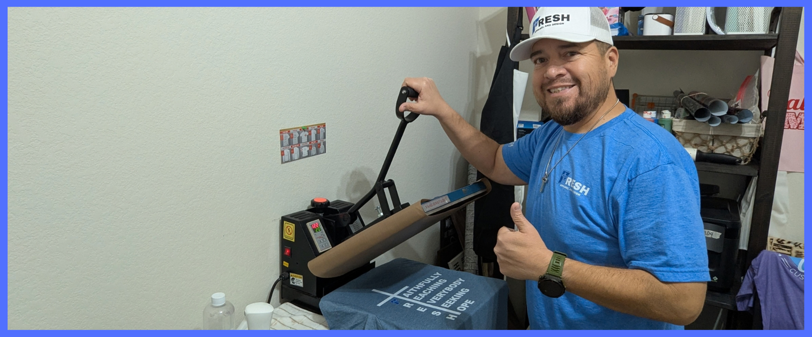
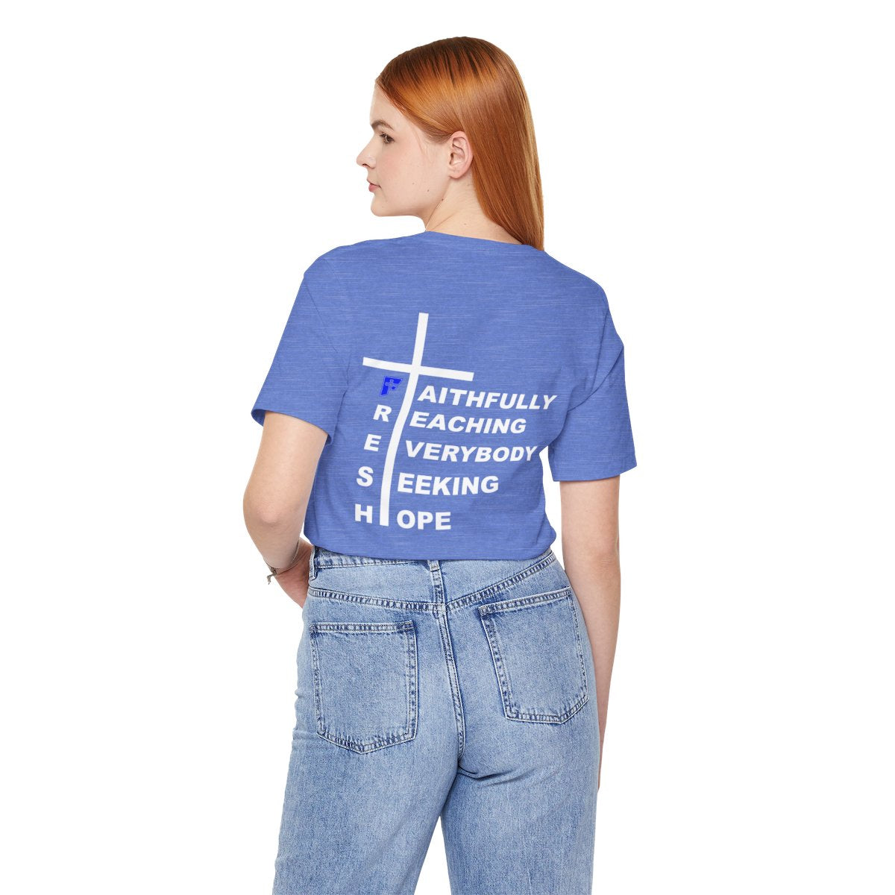
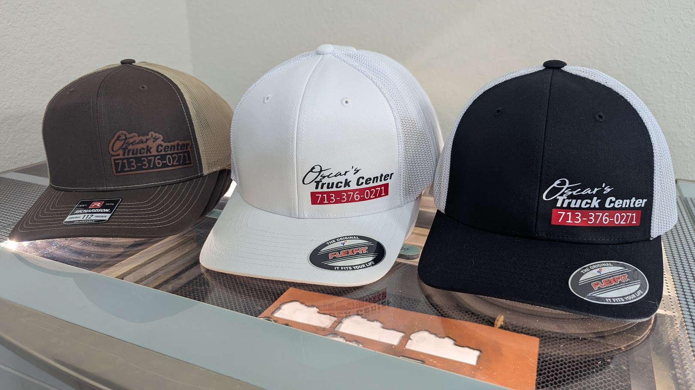
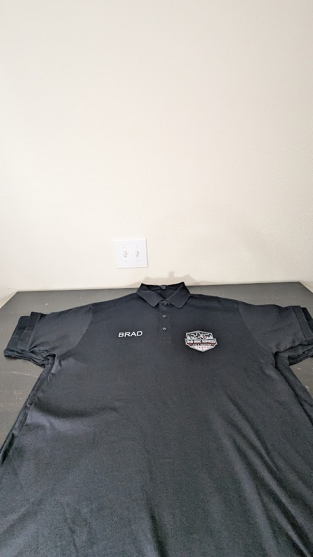
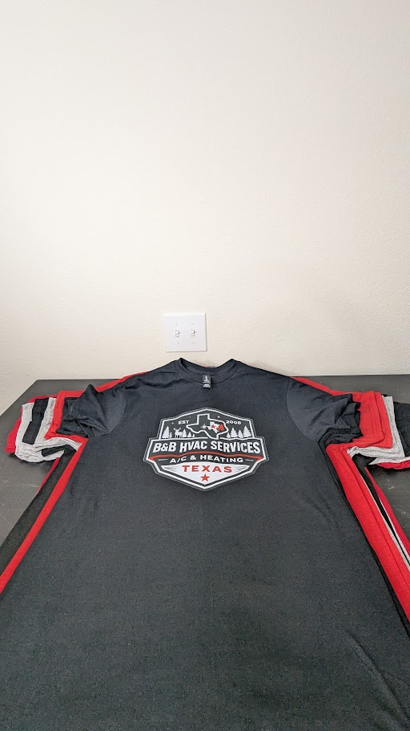
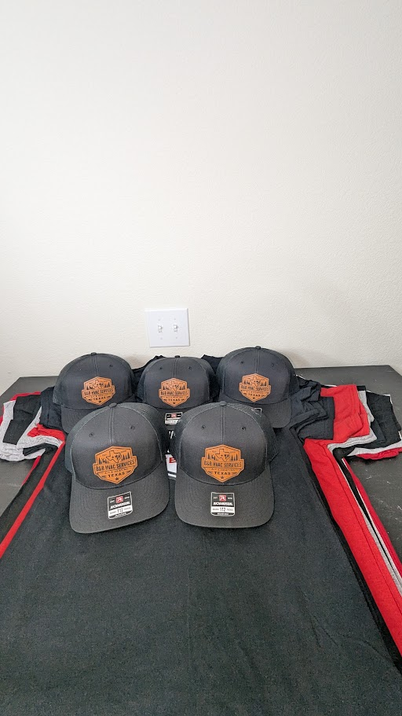
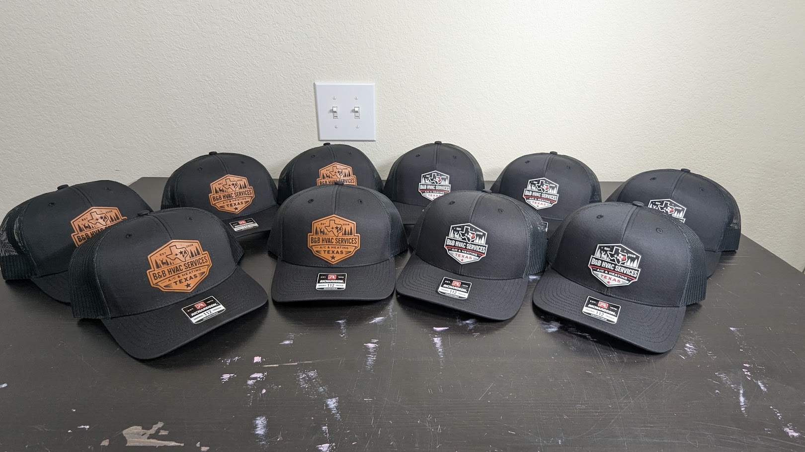

Wear your faith
FRESH apparel is designed to start conversations about faith, hope, purpose, and service.
Faith-led apparel with a purpose
FRESH means Faithfully Reaching Everybody Seeking Hope. Every purchase helps us build toward hot meals, clothing, and hope for people facing hardship.

One shirt. One meal. One mission.
FRESH apparel is designed to start conversations about faith, hope, purpose, and service.
Every purchase helps us build a sustainable outreach fund for hot meals and support for people facing hardship.
The goal is dignity, encouragement, and a reminder that people are seen, valued, and not forgotten.
Our promise: revenue comes first so the giving can last. As outreach begins, we will share the meals, partnerships, and impact created by FRESH customers.

Mission Release 01The FRESH Signature Tee
This is more than a logo tee. It represents faith put into action and helps us take the first practical steps toward feeding and encouraging people in need.
First 100 supporters: use FOUNDERS100 for free shipping while the offer is active.
FRESH for your organization
We create custom-decorated apparel for businesses, teams, churches, ministries, schools, events, and organizations. Bring a finished logo or simply bring the idea.
Vibrant, full-color designs for tees, hoodies, uniforms, events, and merchandise.
Durable, high-energy graphics for performance apparel and specialty products.
Laser-engraved patches with a polished look for companies, crews, and brands.
Clean, crisp lettering and branding for simple, high-impact apparel needs.
Recent FRESH work
Shirts, polos, printed hats, and leather patch hats produced to help teams look professional and represent their name well.






Why I started FRESH
FRESH was born during one of the hardest seasons of my life. I needed a creative outlet that felt like me, but I also wanted the work to serve a purpose bigger than clothing.
This brand is my commitment to build with faith, create with excellence, and turn purchases into practical help for people who need a meal, a shirt, encouragement, or simply a reminder that they are not forgotten.
— Manny, founder of FRESH Apparel & Design
Help launch the mission
Shop the Signature Tee for yourself, or let FRESH outfit your company, team, church, or organization.